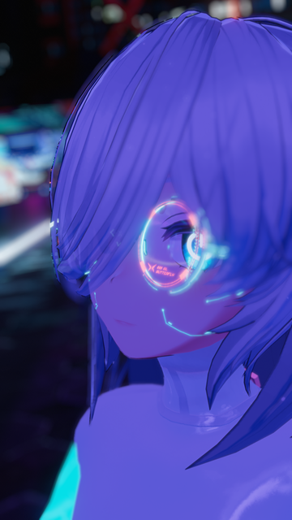

matsuzenのホームページ

matsuzen
| 生年月日 | 2004年10月31日 |
| 生息地 | 仮想（と）現実 |
やぁ。
2021/12/25～In the VRchat matsuzen組のNo1
音楽作ったり音ゲーやFPSしたりアニメ観たり3Dモデルやゲーム作ったりたまに動画作ったりプログラミングしたり色々なんでもして生きてる人。
最近ずっとシージしてる。
WSTubeの発案者。AliceProjectのオーナーでありAliceたんの生みの親である。VRChatter。
@matsu77350014 @matsuzen_VR matsu-zen matsuzenmatsuzenが覚えてる限りの自分の歴史
| 2004.10 | 日本で生まれる。 |
| 2018.4? | たいと出会う。 |
| 2018.9 | YouTubeにてMAD動画を投稿し始める。 |
| 2018.10 | オープンワールドMMO「nextWorld」を使用したゲーム、「トリガーガールズ（仮）」を考案、たいと共に制作を開始する。 |
| 2019.3 | WSTubeシステムを考案、その開発の為たいと某校PC部デジタル映像研究室を開設。 |
| 2021.6 | AliceScriptの開発開始。Aliceたんを生み出しプロジェクトオーナーに任命される。 |
| 2021.12 | VRChatを始める。 |
| 2022.5 | この頃から仮想世界の自分に精神が浸食され始める。 |
| 2022.10 | メタバースプラットフォームVRChatにて、ワールド「終末世界3.0」制作 |
| 2023.4 | 関西の美術系大学に入学 |
| now | 多分生きてる。 |